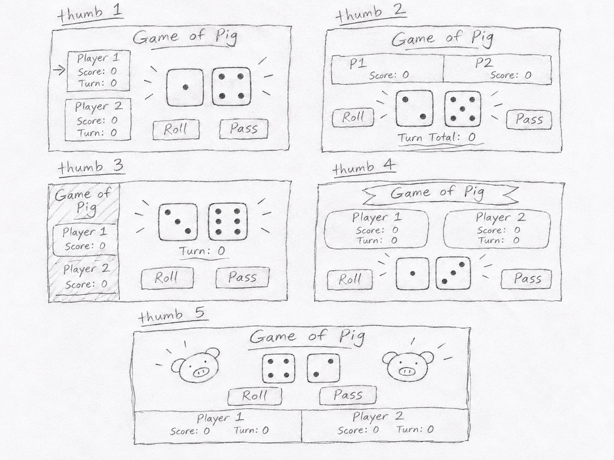
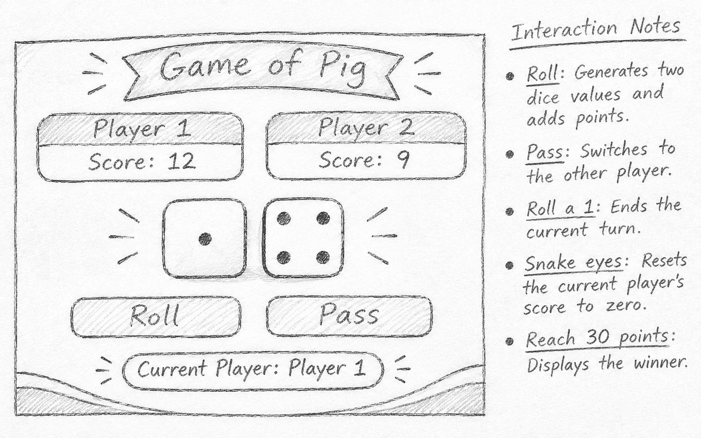
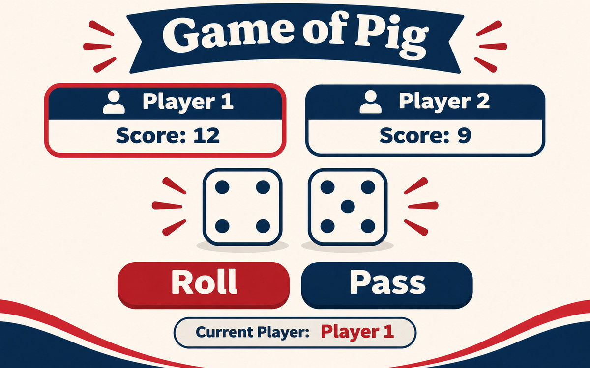

01 / Five Thumbnail Sketches
Five different layout ideas explore where to place player scores, the two dice, and the Roll and Pass buttons. Thumbnail 4 is the direction used for the larger sketch.

02 / Detailed Sketch
The selected layout places the player scores across the top, two dice in the middle, and the Roll and Pass controls below. Notes show how the game responds to player actions.

03 / Digital Design Comp
A 1200 by 750 pixel design comp develops the sketch with navy, cream, and red colors, a large title, clear scorecards, and prominent game controls. The gameplay screen is designed to fit without scrolling at this viewport size.
